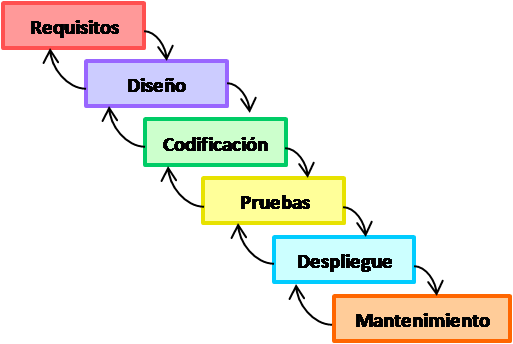
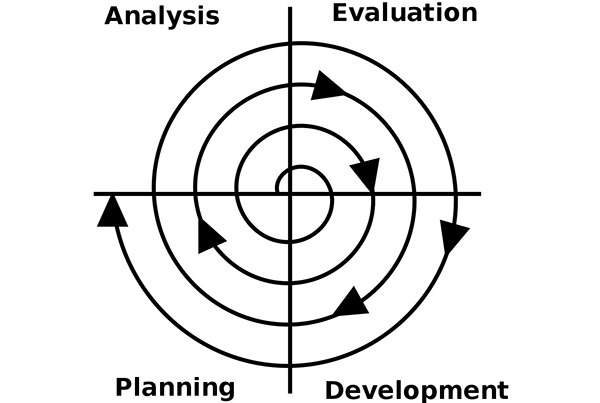
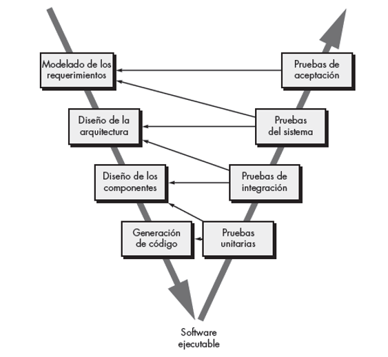
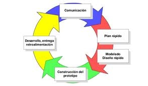

Modelo Cascada
Se lo conoce como modelo cascada o modelo de ciclo de software ya que muestran los procesos en los que pasará porque muestra como una fase pasa a otra para crear de forma correcta ese producto, las etapas que lleva este modelo son los siguientes.

Modelo Cascada
Análisis: Son las necesidades del usuario que necesita, como las restricciones y metas que va a necesitar el sistema, es por eso que cada vez que vamos a realizar la fabricación de un producto lo primero que hacemos es consultar con el cliente en lo que desea, especificando lo que necesita Diseño: Son elemento que se desarrollaran por partes, como el hardware y el software, estableciendo como resultado la arquitectura completa del sistema, el diseño identifica y describe lo fundamental del software Codificación: Llevarla programación de cada elemento por separado, llamado también pruebas aisladas por que cada elemento debe de cumplir con algo en específico y verificar si lo que hace es correcto o no. Integraciones: Aquí donde toman los elementos que habían sido separados y los unen para saber si cumple con el requerimiento completo, después de eso se lo entrega al cliente como prototipo. Mantenimiento: En esta parte se pone en funcionamiento el sistema que se ha creado con el fin de encontrar los errores que no se habían descubierto en las etapas anteriores en el producto o mejorar o añadir nuevos requerimientos al sistema.
Las ventajas del modelo cascada es que no podemos seguir avanzar a otra fase sin que haya finalizado la anterior por que a medida que lo vamos desarrollando podemos ver los errores que contengan en el diseño para corregir los errores que tengan los requerimientos al igual que en el código , en la arquitectura y así podemos evitar iteraciones que serán costosas al igual que volver a rehacer los trabajos,
Caracteristicas
Estos compuestos por fases de secuencias que se ejecutan una después de otra El final de una fase da inicio a sus revisiones Se obtiene documentación sobre la finalización de cada fase.
Modelo Espiral
Es un proceso que muestra la secuencias y la retrospectiva de una con la otra de las actividades, por eso se lo representa como una espiral, este modelo fue propuesto por Boehm (Boehm,1988), sus ciclos en espiral representan el proceso del software de cada fase, como ejemplo que un ciclo representa los requerimientos, otro ciclo representa el diseño, así sucesivamente.

Modelo Espiral
Caracteristicas
Este modelo es utilizado por desarrollar software para diferentes versiones actualizadas como lo hacemos actualmente para programas de PC´S modernas. Es un enfoque que se utiliza actualmente. Contiene una etapa de análisis de riesgos que no se incluía anteriormente.
Modelo Incremental
El proceso del modelo incremental hace que cada evolución que tengamos del software es un incremento más, porque el primer incremento que hacemos al principio se lo considera como núcleo ya que contiene lo básico, será después de sacar los demás incrementos del software para saber su funcionalidad, este modelo por lo general se lo utiliza cuando no tenemos el personal suficiente para el desarrollo del proyecto.

Modelo Incremental
Caracteristicas
Es difícil poder definir el costo del software Podemos entregar una parte del incremento al cliente con cierta frecuencia El resultado de todo el proceso puede ser muy positivo Se requieren de gestores experimentados
Modelo en V
Este modelo se basa en que su proceso está dividido en un lado las especificaciones y los requerimientos que se va a realizar en el desarrollo del producto y en el otro lado es la representación de las componentes que van a integrar el sistema y con sus verificaciones y pruebas ya realizadas. La finalidad de este modelo está en que todo lo que va a conformar el diseño del sistema esté unido a los requerimientos o requisitos que desea el cliente y en el otro lado este todo el código completo de lo que va a componer el sistema después de haber realizado las pruebas de cada componente para que cumpla con lo especificado.

Modelo en V
Ventajas
Desventajas
Modelo de Construcción de Prototipos
Como su nombre lo indica se basa en crear prototipos del producto para demostrarle al cliente si es lo que quiere caso contrario se volverá a crear otro prototipo del mismo producto solo que con cambios o ajustes diferentes y así sucesivamente con varios prototipos hasta que el cliente nos diga que sí y se sienta seguro de lo que creamos para él sea el producto correcto. La finalidad de este modelo es crear al principio un prototipo con un diseño rápido del producto pero con los requisitos que pidió al principio el cliente, será después al momento de demostrarle al cliente el primer prototipo que hemos hecho, porque será él quien lo evaluará y así podemos ver los requisitos que definió al principio son o no y también los requisitos que no pudieron ser aún más definidos, para que luego el cliente reafirma los requisitos que quiere que cumpla el producto.

Modelo de Prototipos
Ventajas
Los prototipos serán evaluados por el cliente para reafirmar los requisitos. Permite volver a identificar los requisitos que no pudieron ser definidos completamente. Se vuelve a crear otro prototipo del producto, pero con ajustes o cambios diferentes.
Desventajas
El desarrollador y el cliente no tienen mucha comunicación al principio de desarrollar el proceso para fabricar el producto que pidió. Surgen cambios inconvenientes que hacen que se retrase el progreso del prototipo para mostrárselo al cliente. El cliente creerá que el prototipo que le estamos mostrando, es el producto ya finalizado cuando en realidad está incompleto e inadecuado.